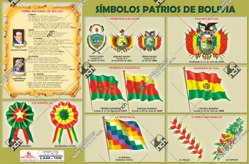
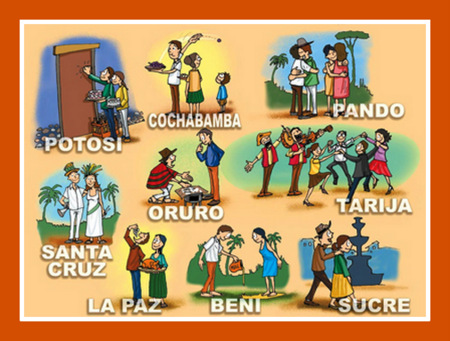

| Viva mi Patria Bolivia, una gran nación. Por ella doy mi vida, también mi corazón. |
ALASITAS |
 |
|---|---|---|
| |
la brindo con amor, a mí Patria Bolivia, que quiero con pasión. |
 |
| |
|
y le doy mi inspiración. Quiere a mi Patria Bolivia, como la quiero yo. |